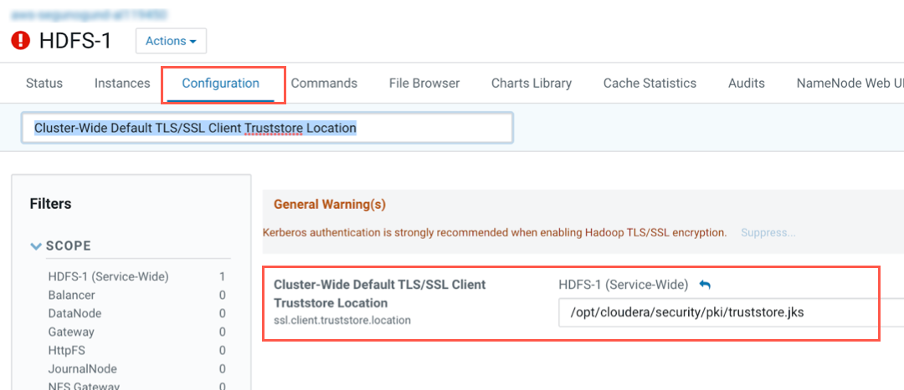

Impala on CDH OCF Connector: Install and Configure¶
Alation Cloud Service Applies to Alation Cloud Service instances of Alation
Customer Managed Applies to customer-managed instances of Alation
Ports¶
Open outbound TCP port 21050 to the Impala server
Open outbound TCP port 9083 to the metastore
Open outbound TCP port 9870 to the WebHDFS server
Open outbound TCP port 9871 to the HDFS server if the cluster uses TLS
Open TCP port 9864 on all cluster data nodes to Alation traffic when using WebHDFS
Open TCP port 9865 on all cluster data nodes to Alation traffic when using Secure (TLS) WebHDFS
Open TCP port 14000 for HTTPFS connection
Extraction of Complex Data Types¶
Complex data types, such as map, array, and struct are extracted. By default, they will be represented as flat lists.
You can enable tree-structure-like representation of complex data types using alation_conf on the Alation server.
Note
Alation Cloud Service customers can request server configuration changes through Alation Support.
To enable the representation of complex data types as a tree structure:
On your Alation instance, set the alation_conf parameter
alation.feature_flags.enable_generic_nosql_supporttoTrue.Additionally, use the parameter
alation.feature_flags.docstore_tree_table_depthto define the depth of the display. By default, three levels are displayed.
For information about using alation_conf, refer to Using alation_conf.
Important
After changing values of these parameters, restart Alation Supervisor from the Alation shell:
alation_supervisor restart all.
Service Account¶
Create a service account for Alation prior to adding your Impala data source to the catalog. The service account requires these permissions:
SELECT on all schemas which you plan to extract into the catalog.
Read and execute permissions for the HDFS location that stores Impala query logs.
Read and execute permissions for Impala external tables.
Access to the metastore.
Kerberized Impala¶
Alation recommends creating the service account in the same realm as the realm used by Impala users.
Kerberos Configuration File¶
In case your Impala data source is kerberized, prepare the krb5.conf file and, if applicable, the keytab file for the service account. They will need to be uploaded to Alation.
Connection Over SSL¶
If your connection from Alation will go over SSL, prepare the truststore file. The truststore file will need to be uploaded to Alation in the settings of the Impala data source to enable metadata extraction, sampling, and query log ingestion over SSL.
Alation expects the truststore.jks file of the HDFS service. You will also need the truststore password. Consult your Impala administrator about downloading this file.
Usually, you can download the certificate from the HDFS component in Cloudera Manager. To locate and download the certificate:
Open the HDFS service in Cloudera Manager.
Click Configuration, then search for Cluster-Wide Default TLS/SSL Client Truststore Location. You should be able to locate the path to the folder that contains the truststore.jks file.
Note
The path to the file may be different for your Impala instance.
Configuration in Alation¶
STEP 1: Install the Connector¶
Alation On-Premise¶
Important
Installation of OCF connectors requires Alation Connector Manager to be installed as a prerequisite.
To install an OCF connector:
If this has not been done on your instance, install the Alation Connector Manager: Install Alation Connector Manager.
Ensure that the OCF connector Zip file is available on your local machine.
Install the connector on the Connectors Dashboard page using the steps in Manage Connectors.
Alation Cloud Service¶
Note
On Alation Cloud Service instances, Alation Connector Manager is available by default.
Depending on your network configuration, you may need to use Alation Agent to connect to databases.
Connection via Alation Agent¶
Ensure that Alation Agent is enabled on your Alation instance. If necessary, create a Support ticket with Alation for an Alation representative to enable the Alation Agent feature on your instance and to receive the Alation Agent installer.
Connection Without Agent¶
To install an OCF connector:
Ensure that the OCF connector Zip file is available on your local machine.
Install the connector on the Connectors Dashboard page using the steps in Manage Connectors.
STEP 2: Create and Configure a New Data Source¶
In Alation, add a new data source:
Log in to Alation as a Server Admin.
Expand the Apps menu on the right of the main toolbar and select Sources.
On the Sources page, click +Add on the top right of the page and in the list that opens, click Data Source. This will open the Add a Data Source wizard.
On the first screen of the wizard, specify a name for your data source, assign additional Data Source Admins, if necessary, and click the Continue Setup button on the bottom. The Add a Data Source screen will open.
On the Add a Data Source screen, the only field you should populate is Database Type. From the Database Type dropdown, select the connector name. After that you will be navigated to the Settings page of your new data source.
Note
Agent-based connectors will have the Agent name appended to the connector name.
The connector name is Impala OCF Connector.
JDBC URI¶
Impala supports different types of authentication methods. Use the JDBC URI format that corresponds to the authentication method you are using.
Basic Authentication¶
Format¶
hive2://<HOSTNAME>:21050/default/;auth=noSasl
Example¶
hive2://ip-10-13-28-190.alation-test.com:21050/default/;auth=noSasl
Kerberized Impala¶
Format¶
hive2://<HOSTNAME>:21050/default/;principal=impala/<sevice_principal>
Example¶
hive2://ip-10-13-6-82.alation-test.com:21050/default/;principal=impala/ip-10-13-6-82.alation-test.com@ALATION-TEST.COM
Connection over SSL¶
Format¶
hive2://<hostname>:<port>/default/;auth=noSasl;ssl=true
Examples¶
SSL
hive2://ip-10-13-22-251.alation-test.com:21050/default/;auth=noSasl;ssl=trueKerberos + SSL
hive2://ip-10-13-6-82.alation-test.com:21050/default/;ssl=true;principal=impala/ip-10-13-6-82.alation-test.com@ALATION-TEST.COM
Metastore URI¶
Format¶
trift://<hostname>:<port>
Example¶
thrift://ip-10-13-22-251.alation-test.com:9083
Metastore Principal Example¶
hive/ip-10-13-6-82.alation-test.com@ALATION-TEST.COM
Access¶
On the Access tab, set the data source visibility using these options:
Public Data Source—The data source will be visible to all users of the catalog.
Private Data Source—The data source will be visible to the users allowed access to the data source by Data Source Admins.
You can add new Data Source Admin users in the Data Source Admins section.
General Settings¶
Note
This section describes configuring settings for credentials and connection information stored in the Alation database. If your organization has configured Azure KeyVault or AWS Secrets Manager to hold such information, the user interface for the General Settings page will change to include the following icons to the right of most options:

{kind=link}
{kind=link}
By default, the database icon is selected, as shown. In the vault case, instead of the actual credential information, you enter the ID of the secret. See Configure Secrets for OCF Connector Settings for details.
Perform the configuration on the General Settings tab.
Application Settings¶
Specify Application Settings if applicable. Click Save to save the changes after providing the information.
Parameter |
Description |
|---|---|
BI Connection Info |
This parameter is used to generate lineage between the current data source and another source in the catalog, for example a BI source that retrieves data from the underlying database. The parameter accepts host and port information of the corresponding BI data source connection. Use the following format: You can provide multiple values as a comma-separated list:
Find more details in BI Connection Info. |
Disable Automatic Lineage Generation |
Select this checkbox to disable automatic lineage generation from QLI, MDE, and Compose queries. By default, automatic lineage generation is enabled. |
Connector Settings¶
Data Source Connection¶
Populate the data source connection information and save the values by clicking Save in this section.
Parameter |
Description |
|---|---|
JDBC URI |
Specify the JDBC URI in the required format. See JDBC URI. |
Metastore URI |
Specify the metastore URI. |
Username |
Specify the service account username. |
Password |
Specify the service account password. |
Enable SSL |
Enable SSL authentication by selecting the Enable SSL checkbox. If the Enable SSL checkbox is enabled, upload the SSL certificate using the upload link below. |
Truststore password |
Specify the password for the SSL certificate. Note: The password will be deleted if the data source connection is deleted. |
Enable Kerberos Authentication |
Enable or disable Kerberos authentication by selecting or clearing the Enable Kerberos Authentication checkbox. If the Kerberos authentication checkbox is enabled, upload the krb5.conf file using the upload link under the checkbox. |
Use keytab |
To enable Kerberos with Keytab authentication, select the Use Keytab checkbox and upload the keytab file for the service account using the upload link under the checkbox. |
Metastore Principal |
Specify the metastore principal. |
Logging Configuration¶
Select the logging level for the connector logs and save the values by clicking Save in this section. The available log levels are based on the Log4j framework.
Parameter |
Description |
|---|---|
Log level |
Select the log level to generate logs. The available options are INFO, DEBUG, WARN, TRACE, ERROR, FATAL, ALL. |
You can view the connector logs in Admin Settings > Manage Connectors > Impala OCF Connector.
Obfuscate Literals¶
Obfuscate Literals—Enable this toggle to hide actual values in the query statements that are ingested during query log ingestion or executed in Compose. This toggle is disabled by default.
Test Connection¶
After specifying the connector settings, under Test Connection, click Test to validate network connectivity.
Metadata Extraction¶
The Impala OCF Connector supports default extraction—This type of MDE is based on Impala API calls that are built in the connector code.
Custom query-based MDE is not supported.
Note
Complex data types are extracted. See Extraction of Complex Data Types for information on how to enable their representation in the Alation user interface.
You can configure metadata extraction (MDE) for an OCF data source on the Metadata Extraction tab of the Settings page. Refer to Configure Metadata Extraction for OCF Data Sources for information about the available configuration options.
Compose¶
For details about configuring the Compose tab of the Settings, refer to Configure Compose for OCF Data Sources.
Note
Compose is not available on Alation Cloud Service instances when the data source is connected through Alation Agent. For this data source, Compose with Kerberos and SSL authentication is currently not supported.
Sampling and Profiling¶
Alation supports a number of ways to retrieve data samples and column profiles. For details, see Configure Sampling and Profiling for OCF Data Sources.
Query Log Ingestion¶
On the Query Log Ingestion tab, you can select the QLI options for your data source and schedule the QLI job if necessary.
For Impala on CDH, Alation supports QLI from query log files stored on HDFS.
Prerequisites for QLI¶
In order to run Query Log Ingestion for an Impala data source, perform the following pre-configuration on your instance of Impala:
Enable audit log in Impala. For specific details refer to documentation for your CDH version, for example: Impala Auditing.
Enable auditing by including the option
-audit_event_log_dir=directory_pathin yourimpaladstartup options. The path refers to a local directory on the server, not an HDFS directory.Decide how many queries will be represented in each log file. By default, Impala starts a new log file every 5,000 queries. To specify a different number, include the option
-max_audit_event_log_file_size=number_of_queriesin theimpaladstartup options. Limiting the size manages disk space by archiving older logs and reduces the amount of text to process when analyzing activity for a particular period.Periodically retrieve audit logs from Impala coordinator nodes to HDFS.
By default, the audit logs are located in /var/log/impalad/audit/ inside Impala coordinator nodes. Users can also configure the place of audit logs.
To periodically retrieve logs, you can write a script and run it as a cron job to pull the audit logs from impala coordinator nodes to HDFS every day. See an example in Appendix 8 A.8 Impala QLI Script.
Create a directory for storing all Impala audit logs in HDFS.
The audit log files from each Impala coordinator node should only stay in an HDFS subdirectory of the audit log directory. The subdirectory should be named by the ID of the Impala coordinator node, for example, IP address, or any unique identifier.
After all the steps are completed, you can configure and perform Query Log Ingestion (QLI) for Impala in Alation.
Place Query Logs on HDFS¶
Impala supports query log extraction from files located on an HDFS server. To set up QLI:
SSH into the CDH instance.
Log in as the root user.
While logged in as the root user, change the current directory to /var/log/impalad/audit.
In the audit directory, make sure there’s an Impala audit event log file. The file has the format:
impala_audit_event_log_1.0-*.After confirming the file exists, create a directory in the /user/history/done directory on HDFS, for example:
sudo -u hdfs hadoop fs -mkdir -p /user/history/done/log_1
The name of the directory can be anything you want. We named it
log_1in this example.After creating the
log_1directory, recursively modify the permission of the/donedirectory and its sub-directories with the following command:sudo -u hdfs hadoop fs -chmod -R 777 /user/history/done
Copy the
impala_audit_event_log_1.0-*fileinto thelog_1directory with the following command:hadoop fs -put impala_audit_event_log_1.0-* /user/history/done/log_1
As an alternative to the above steps that manually copy the log file to a directory, you can use this script to periodically copy the log file to the HDFS.
Configure QLI in Alation¶
You can configure QLI on the Query Log Ingestion tab of the data source settings page.
Open the Query Log Ingestion tab of the settings page.
Under Connector Settings > Query Extraction, provide the required information and click Save:
Parameter
Description
Logs Directory
/user/history/doneWebHDFS Server
Hostname of the WebHDFS server
WebHDFS Port
Specify the HDFS port number for your environment. The default is 9870 or or 9871 in case of TLS). If you are using a different port, clear the Use Default checkbox under the HDFS Port field.
Use Default
Leave selected if you are using the default port.
Clear this checkbox if you are using a port number other than the default.
WebHDFS User
hdfs
Perform QLI¶
You can either perform QLI manually on demand or enable automated QLI:
To perform manual QLI, under the Automated and Manual Query Log Ingestion section of the Query Log Ingestion tab, ensure that the Enable Automated Query Log Ingestion toggle is disabled.
Note
Metadata extraction must be completed first before running QLI.
Click Preview to get a sample of the query history data to be ingested.
Click the Import button to perform QLI on demand.
To schedule QLI, enable the Enable Automated Query Log Ingestion toggle.
Set a schedule under Automated Query Log Ingestion Time by specifying values in the week, day, and time fields. The next QLI job will run on the schedule you have specified.
Note
The hourly schedule for automated QLI is not supported.